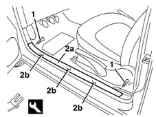

7040L40 front compartment scuff strip - r r
- Path
- Procedures > 70 FITTINGS > 7040 BODYSHELL INTERIOR TRIMS AND FITTINGS > 7040L cabin floor covering > 7040L40 front compartment scuff strip - r r
- Kind
- repair procedure (removal / refitting; the operation number is the code)
- Applies to
- all engines; all production periods
- Interactive page
- https://sloeber94.github.io/elrnDB-lYpsln/en/#/2429604
Applies to: all engines; all production periods
 Removing
Removing
 Refitting
RefittingOpen the door.
1. Undo the bolts at the end of the running board.
2. Remove the running board (2a) releasing the inner retainers (2b) using the special tool.
 | Name | Country |
|---|---|---|
1 | Scraper blade | 1.878.077.000 |

Applies to: all engines; all production periods
Refitting
RemovingCheck that the running board is not damaged and that the inner retainers are intact and correctly positioned.
Position the running board fitting the inner retainers.
Tighten the bolts at the two ends.
Topics that link to this page (22)
- 5570T26 aerial for car radio - r+r
- 5580C40 sidebag sensor (one), lh or rh - r r
- 5580C50 (HEAD- BAG MODULE ) (one), left or right - R.R.
- 5580H10 parking obstacle detection device electronic control unit - r r
- 5580H12 parking obstacle detection device buzzer - r r
- 5580T20 bose sound system rear speaker (one), lh or rh - r r
- 7005A34 front side door compartment seal r r
- 7030B47 GUIDE device for sliding roof movement control cables - R.R .
- 7030B48 FIXED REAR TRANSPARENT section of sliding roof - R.R .
- 7030B50 sun roof guide , one , lh or rh - r r
- 7030B70 sun-roof control switch - r+r
- 7040H10 roof panel lining - r r
- 7040H16 roof panel lining - r r
- 7040H38 central pillar upper element - r r
- 7040H42 rear pillar trim - r r
- 7040H43 REAR PILLAR TRIM (one), left or right on versions with BOSE system - R.R.
- 7040H50 rear panel - r r
- 7040L10 cabin floor carpet - r r
- 7065A12 front seat belt (one), lh or rh, with pretensioner on wheel - r r
- 7065A18 Front set belt HEIGHT ADJUSTER , (one), left or right - R.R.
- 7065B10 l/h or r/h rear safety belt (one) - r+r
- 7065B18 CENTRE REAR SEAT BELT - R.R.